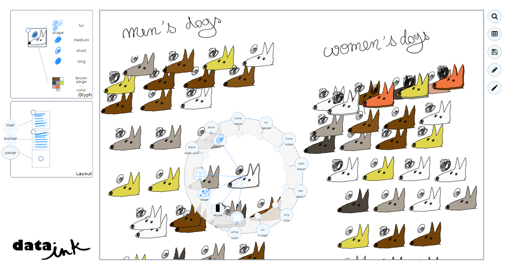
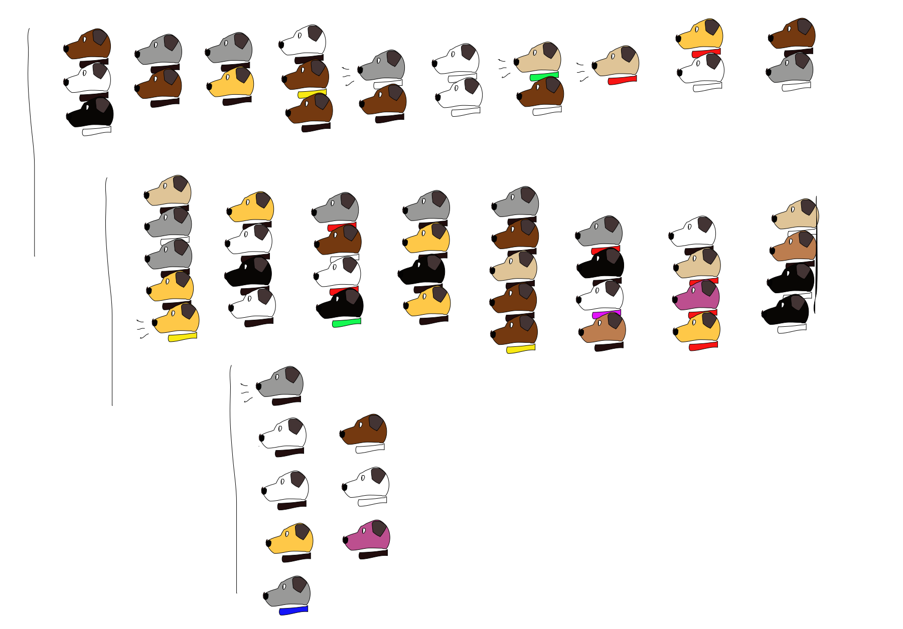
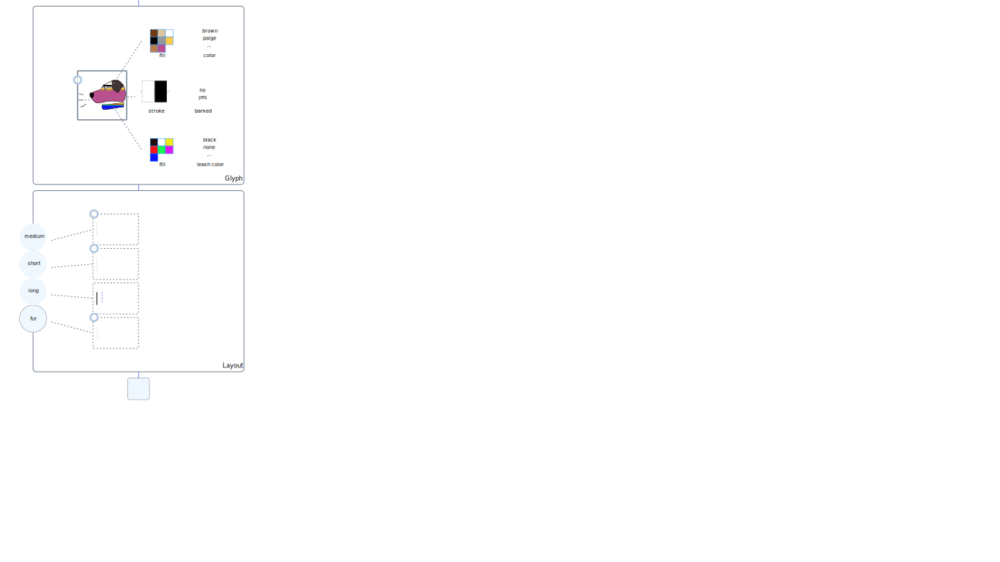
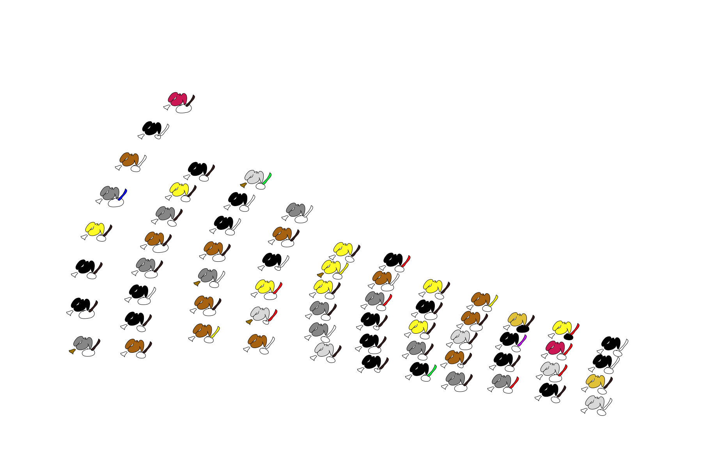
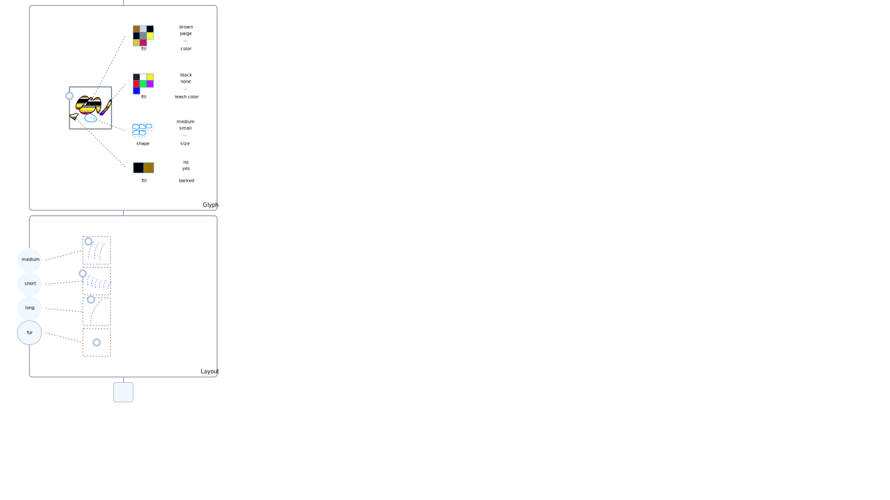

Creating whimsical, personal data visualization remains a challenge due to a lack of tools that enable creative visual expression while providing support for binding graphical content to data. Many data analysis and visualization creation tools target the quick generation of visual representations, but lack functionality for graphics design. Toolkits and charting libraries offer more expressive power, but require high programming skill to achieve custom designs. In contrast, sketching affords fluid experimentation with visual shapes and layouts in a free-form manner, but requires to manually draw every single data point. In this work, we aim to bridge the gap between these extremes. We propose data-oriented drawing, an approach leveraging digital sketching and data manipulation to address the difficulties of creating such visualizations, and present DataInk, a prototype implementing this approach. An evaluation with designers and laymen demonstrate the expressive flexibility and power of our approach.
This paper is currently under review at ACM SIG CHI 2018.
Supplemental Material
[Paper]
[Video]
[DataInk]
[Examples]
[Study material]
[Study results]
DataInk

Examples
Study
Material
Results
Participant 1, designer - dogs dataset


Participant 2, designer - dogs dataset

